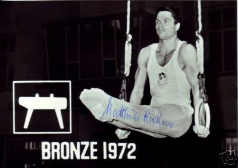

Matthias Brehme (GDR)
1971 European Championships PH Silver Medalist

Medal Total
Olympic Games: 2
Bronze
World Championships: 2 Bronze
European Championships: 1 Silver
Matthias was born on February 7, 1943, in Markkleeberg. He trained at SC DHfK Leipzig with coaches Jochen Nonnast and Siegfried Fulle. After retiring from gymnastics, in 1974 he began to study medicine (specializing in psychiatry and neurology) and eventually worked as a neurologist at the NVA Hospital in Leipzig. After reunification, he opened his own practice in Leipzig-Markkleeberg. His gymnast wife, Eva, competed at the 1966 world championships.
Competition Results
1965
GDR Championships: 1st AA, 1st PH, 1st R, 1st PB, 1st HB, 3rd FX
1966
DTV Cup: 1st AA
GDR Championships: 1st AA, 1st PB, 1st HB, 2nd PH, 3rd R 4th V
GDR-USSR Dual Meet: 2nd Team, 2nd AA
POL-GDR Dual Meet: 2nd AA
RSFSR-GDR Dual Meet: 1st AA
ROM-GDR Dual Meet: 1st Team, 1st AA
World Championships: 3rd Team, 9th AA, 4th PH, 5th PB
1967
European Championships: 6th AA, 5th R, 5th PB
GDR Championships: 6th AA, 1st PH, 3rd HB, 4th R, 6th V
GDR-ROM Dual Meet: 1st Team, 8th AA
SWE-GDR Dual Meet: 1st Team, 5th AA
USSR-GDR-POL Meet: 7th AA
1968
CSSR-GDR Dual Meet: 1st AA
GDR Championships: 2nd AA, 2nd HB, 4th PH, 4th R, 6th FX, 6th V, 6th
PB
GDR-USSR Dual Meet: 6th AA
Olympic Games: 3rd Team, 12th AA
1969
DTV Cup: 3rd AA
GDR Championships: 2nd AA, 1st V, 2nd R, 2nd HB, 4th FX, 6th PB
GDR-JPN Dual Meet: 2nd Team, 2nd AA
GDR-ROM Dual Meet: 1st Team, 1st AA, 1st R, 1st HB
International Championships of Romania: 1st AA
Pre-World Championships: 7th AA
USSR-GDR-FIN Meet: 5th AA, 1st V, 3rd PB, 4th R
1970
Chunichi Cup: 6th AA
GDR Championships: 2nd AA, 3rd PB, 3rd HB, 4th FX, 4th R, 5th PH
GDR-USSR Dual Meet: 2nd Team, 5th AA
World Championships: 3rd Team, 11th AA, 5th PH
1971
European Championships: 11th AA, 2nd PH, 4th R
GDR-BUL Dual Meet: 1st Team, 1st AA
GDR-PRK Dual Meet: 1st Team, 3rd AA
GDR-USSR Dual Meet: 1st Team, 3rd AA
Riga International: 7th AA, 3rd PH, 5th V, 6th R
1972
DTV Cup: 6th AA
GDR-SUI Dual Meet: 1st Team, 1st AA
GDR-USSR Dual Meet: 2nd Team, 4th AA
GDR-YUG Dual Meet: 1st Team, 1st AA
Olympic Games: 3rd Team, 10th AA
This page was created on September
08, 2006 and was last updated on June 23, 2021.
© Gymn Forum